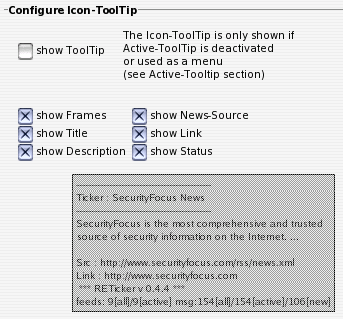

IV. Einzelübersicht über die Optionen

IV.IV. ToolTip (over icon)
Configure Icon-ToolTip
Hier kann der ToolTip, welcher angezeigt wird, wenn die Maus über dem Icon des Tickers verweilt, konfiguriert werden. Dieser wird allerdings nur angezeigt, wenn 'show ToolTip' aktiviert ist und der Active-ToolTip deaktiviert oder als Menu konfiguriert wurde.Die Änderungen in den weiteren Optionen werden in ihren Effekten auf das ToolTip-Layout in der angezeigten Vorschau verdeutlicht.
Wird 'show Status' ausgewählt, werden unter der aktuellen Programmversion einige Zusatzinformationen angezeigt. Diese sind wie folgt zu entschlüsseln:
| feeds: | x[all] | x[active] | msg: | x[all] | x[active] | x[new] |
| Zahl aller konfigurierten News-Quellen | Zahl aller aktiven News-Quellen | Zahl aller lokal vorhandenen Nachrichten | Zahl aller Nachrichten aktiver Quellen | Zahl aller aktuellen Nachrichten |